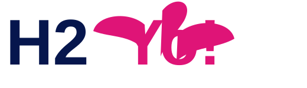

Good for Yo Body
A feel-good giveaway that hydrates the person receiving it and starts a positive brand moment.

Build Yo CampaignCustom bottled water + QR-powered feel-good experiences
H2Yo! helps businesses, nonprofits, teams, clubs, sponsors, and events create branded bottled water campaigns that hydrate the body, lift the mind, and turn goodwill into measurable action.
Sample Campaigns
A feel-good giveaway that hydrates the person receiving it and starts a positive brand moment.

The QR scan can deliver a positive message, surprise, fortune, download, offer, or entry form.

Encouragement first. Action second. The campaign starts with goodwill before the ask.

For nonprofits, churches, teams, clubs, fundraisers, sponsors, events, and businesses that want a branded QR-powered campaign experience.
The corrected positioning
They get water, a smile, a positive message, maybe a game, a prize entry, or an affirmation like “You’re loved.”
Your brand, cause, team, event, or sponsor becomes connected to that positive moment.
The scan turns attention into measurable action: donations, leads, bookings, signups, sponsor interest, or follow-up.
Sample scan experience
The QR code does not need to start with a sales pitch. It can start with a feel-good moment, then naturally guide the recipient toward the campaign action.
Yo says...
This positive moment was shared by your sponsor or organization.
Support / Enter / ClaimHow it works
No marketing math required. Yo asks what you know: who, what, where, when, and why.
Yo estimates scan potential, recommended quantity, campaign risks, and ways to improve results.
See sample label messaging, a scan hook, a landing page direction, and a campaign readiness score.
Approve the proof, activate the QR funnel, capture leads, and follow up after the bottle is handed out.
Meet Yo
Yo is cool, practical, and focused on making yo promotion work. He does not ask clients to guess scan rates or conversion rates. Yo uses their campaign facts, benchmark assumptions, and eventually H2Yo! historical campaign data to guide the next step.
Interactive prototype
This front-end prototype demonstrates the client journey: simple answers in, PAR-style recommendation out.
Package concept
1,440 bottles
Custom label, QR code, landing page, lead capture form, and basic campaign setup.
2,880 bottles
Everything in Starter plus scan-hook optimization, follow-up sequence, and sponsor/cause section.
Quarterly drops
Recurring campaign support, updated QR experiences, CRM nurturing, reporting, and reorders.